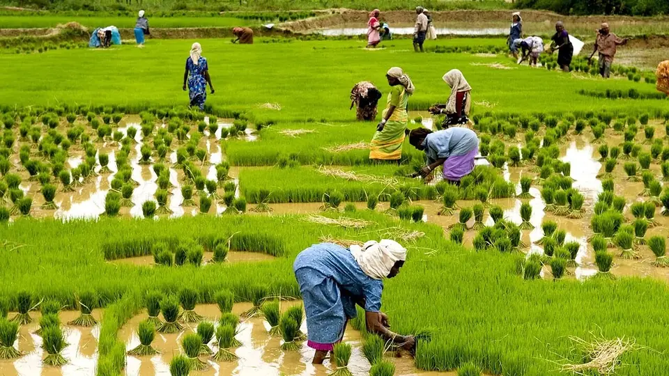

🐛 फसल कीट🗓️ अगस्त–अक्टूबर📍 उत्तर प्रदेश · धान पट्टी
धान में भूरा फुदका (भूरा माहू)
Brown Plant Hopper (BPH) in Paddy — Identification, ETL & Control
धान का खेत ऊपर से हरा दिखे और बीच में गोल चकत्ता सूखकर भूरा हो जाए — यह भूरा फुदका है। यह तने के सबसे नीचे बैठकर रस चूसता है, इसलिए दिखने तक चकत्ता बन चुका होता है।
✍️ Kunal Rajput — KrashiMitra⏱️ 9 मिनट पढ़ें📅 जुलाई 2026

धान का खेत — भूरा फुदका पौधे के तने के निचले हिस्से में बैठकर रस चूसता है।
अगस्त-सितंबर में धान का सबसे महँगा दुश्मन — भूरा फुदका
🔥
हॉपर बर्न
गोल भूरा चकत्ता
📊
5–10
फुदके/हिल पर ही छिड़काव
💧
3–4 दिन
खेत सुखाना = मुफ्त इलाज
📖
भूमिका
धान का खेत ऊपर से हरा-भरा दिखता है, और अचानक बीच में एक गोल चकत्ता सूखकर भूरा हो जाता है — जैसे किसी ने वहाँ आग लगा दी हो। यह पानी की कमी नहीं है और न ही कोई फफूंद रोग। यह भूरा फुदका (Brown Plant Hopper — BPH) है, जिसे किसान भूरा माहू, फुदका, चेपा या हॉपर बर्न भी कहते हैं। उत्तर प्रदेश की धान पट्टी में यह अगस्त के दूसरे पखवाड़े से लेकर सितंबर–अक्टूबर तक सबसे ज़्यादा नुकसान करने वाला कीट है।
इसकी सबसे खतरनाक बात यह है कि यह पौधे के ऊपर नहीं, तने के सबसे नीचे — पानी की सतह के पास बैठकर रस चूसता है। किसान ऊपर से देखता है, कुछ नहीं दिखता, और जब तक दिखता है तब तक चकत्ता बन चुका होता है। दूसरी सबसे महँगी गलती है गलत दवा का छिड़काव — कुछ दवाएँ भूरा फुदका को मारने की बजाय उसकी संख्या उल्टा बढ़ा देती हैं। इस लेख में पहचान, गिनती का सही तरीका (ETL), बिना पैसे के काम करने वाले उपाय, और CIB&RC लेबल वाली सही दवाओं का डोज़ — आसान हिंदी में।
विज्ञापन
🐛
भूरा फुदका क्या है?
भूरा फुदका (Nilaparvata lugens) एक 3–4 मि.मी. लंबा भूरे रंग का छोटा कीट है जो धान के तने से रस चूसता है। यह सिर्फ धान पर पलता है — इसीलिए धान का खेत खाली होते ही इसका भोजन खत्म हो जाता है। छूने पर यह फुदककर दूसरी जगह चला जाता है, इसी से इसका नाम "फुदका" पड़ा।
यह कीट दो तरह का दिखता है — छोटे पंख वाला (brachypterous) रूप, जो एक ही खेत में तेज़ी से संख्या बढ़ाता है, और लंबे पंख वाला (macropterous) रूप, जो उड़कर दूसरे खेतों तक फैलता है। जब आपको खेत में लंबे पंख वाले फुदके दिखने लगें, समझ लीजिए यह अब पड़ोसी के खेत तक जाने की तैयारी में है।
💡
"हॉपर बर्न" असल में क्या है? सैकड़ों फुदके एक साथ तने का रस चूस लेते हैं, जिससे पौधा पानी और भोजन ऊपर नहीं भेज पाता और सूखकर गिर जाता है। खेत में बना यह गोल भूरा चकत्ता ही हॉपर बर्न कहलाता है। एक बार चकत्ता बन जाने के बाद उस हिस्से की फसल वापस नहीं आती — इसलिए असली काम चकत्ता बनने से पहले का है।
🔍
पहचान — खेत में क्या देखें
भूरा फुदका देखने के लिए पौधे को हाथ से हल्का फैलाकर तने के निचले हिस्से में, पानी की सतह के ठीक ऊपर झाँकना पड़ता है। ऊपर की पत्तियाँ देखकर इसका पता कभी नहीं चलता।
गोल भूरा चकत्ता: खेत के बीच में गोलाई में सूखी फसल — यह सबसे पक्की लेकिन सबसे देर से मिलने वाली पहचान है।
तने पर काली कालिख जैसी परत: फुदके का मीठा मल (हनीड्यू) तने पर गिरता है और उस पर काली फफूंद (sooty mould) जम जाती है — तना काला और चिपचिपा लगता है।
पानी पर तैरते सफेद केंचुल: फुदके की केंचुल (exuviae) पानी की सतह पर सफेद भूसी जैसी तैरती दिखती है। यह शुरुआती और बहुत भरोसेमंद निशानी है।
पत्तियों का सिरे से पीला होना: पहले नोक पीली-नारंगी, फिर पूरी पत्ती सूखना।
छूने पर फुदकना: पौधे को हिलाने पर पानी की सतह पर दर्जनों छोटे कीट फुदकते और तैरते दिखेंगे।
बालियाँ हल्की और खाली: देर से हमला होने पर दाना भरता नहीं, बाली खड़ी और सफेद रह जाती है।
पहचान बिंदु
✅ स्वस्थ धान
❌ भूरा फुदका ग्रस्त
तने का निचला हिस्सा
साफ, हरा
भूरे कीटों का झुंड, चिपचिपा
तने का रंग
हरा
काली कालिख (sooty mould) की परत
पानी की सतह
साफ
सफेद केंचुल तैरती हुई
खेत की शक्ल
एकसार हरा
बीच-बीच में गोल भूरे चकत्ते
पत्ती
चौड़ी, गहरी हरी
नोक से पीली-नारंगी, फिर सूखी
बाली
भरी, झुकी हुई
हल्की, खड़ी, आधा-खाली दाना
💡
2 मिनट की जाँच: खेत में 8–10 जगह जाएँ। हर जगह एक हिल (एक थान) को दोनों हाथों से फैलाकर पानी की सतह के पास 30 सेकंड तक देखें और कीट गिनें। किनारे की बजाय खेत के बीच वाले और घने, गहरे हरे हिस्से ज़रूर देखें — प्रकोप हमेशा वहीं से शुरू होता है।
🔄
जीवन चक्र — 25 दिन में पूरी नई पीढ़ी
एक मादा फुदका तने के अंदर 100 से 300 तक अंडे देती है। अंडे 6–9 दिन में फूटते हैं, शिशु (निम्फ) 13–15 दिन में बड़े हो जाते हैं, और लगभग 25–30 दिन में एक पूरी नई पीढ़ी तैयार हो जाती है। एक धान के मौसम में इसकी 3 से 4 पीढ़ियाँ बन जाती हैं — यही कारण है कि 10 दिन पहले जो खेत ठीक लग रहा था, वह अचानक भर जाता है।
इसके लिए सबसे अनुकूल मौसम है 25–30°C तापमान, 80% से ज़्यादा नमी, बादल और रुक-रुक कर बारिश — यानी उत्तर प्रदेश में अगस्त-सितंबर का मौसम। लगातार खड़ा पानी और घनी फसल इसकी संख्या को और तेज़ी से बढ़ाते हैं।
विज्ञापन
⚠️
यह अचानक क्यों फूट पड़ता है? — पुनरुत्थान (Resurgence)
भूरा फुदका का प्रकोप ज़्यादातर प्राकृतिक नहीं, किसान की तीन आदतों से बना हुआ होता है। इन्हें समझना दवा के डोज़ से भी ज़्यादा ज़रूरी है।
गलत दवा का छिड़काव: सिंथेटिक पायरेथ्रॉइड (साइपरमेथ्रिन, फेनवैलरेट, डेल्टामेथ्रिन) और कुछ पुरानी दवाएँ मकड़ी, मिरिड बग और परजीवी ततैया जैसे मित्र-कीटों को पहले मार देती हैं। दुश्मन खत्म होते ही फुदका बेरोकटोक बढ़ता है — इसी को resurgence (पुनरुत्थान) कहते हैं।
ज़रूरत से ज़्यादा यूरिया: ज़्यादा नाइट्रोजन से पौधा मुलायम और रसदार हो जाता है, जिस पर मादा ज़्यादा अंडे देती है और शिशु तेज़ी से बढ़ते हैं। एक साथ पूरी यूरिया डालना इस कीट को न्योता देना है।
घना रोपण और लगातार खड़ा पानी: पौधों के बीच जगह न हो तो नीचे हवा और धूप नहीं पहुँचती, नमी बनी रहती है — फुदके के लिए आदर्श माहौल।
एक ही दवा बार-बार: इससे कीट में प्रतिरोध (resistance) बनता है। भारत में इमिडाक्लोप्रिड जैसे कुछ पुराने अणुओं के विरुद्ध भूरा फुदका की प्रतिरोध क्षमता कई जगह दर्ज हो चुकी है।
⚠️
"कुछ भी हो, पहले एक छिड़काव मार दो" — यही सबसे बड़ी भूल है। बिना गिने किया गया छिड़काव पैसा भी खर्च करता है और मित्र-कीट मारकर अगले 15 दिन में प्रकोप बढ़ा भी देता है। पहले गिनें, फिर तय करें।
📊
निगरानी और ETL — छिड़काव कब ज़रूरी है
ETL यानी आर्थिक क्षति स्तर — वह संख्या जिसके बाद दवा का खर्च वसूल हो जाता है। इससे कम पर छिड़काव करना घाटे का सौदा है।
फसल की अवस्था
ETL (प्रति हिल)
क्या करें
कल्ले फूटने की अवस्था (रोपाई के 30–50 दिन)
5–10 फुदके
जल निकासी + यूरिया रोकें; जैविक छिड़काव
बाली निकलने / दाना भरने की अवस्था
10–20 फुदके
सिफ़ारिश की गई दवा का छिड़काव
मित्र-कीट (मकड़ी) मौजूद हों
1 मकड़ी : 5–8 फुदके तक
छिड़काव रोकें — प्रकृति संभाल रही है
गिनती हमेशा सुबह या शाम करें, जब कीट सक्रिय रूप से तने पर बैठा होता है। दोपहर की तेज़ धूप में यह नीचे छिप जाता है और गिनती कम आती है। खेत में प्रकाश प्रपंच (लाइट ट्रैप) लगा हो तो रात में फँसने वाले फुदकों की संख्या अचानक बढ़ना आने वाले प्रकोप की पहली चेतावनी होती है।
🛡️
बिना पैसे खर्च किए रोकथाम — यही सबसे असरदार है
खेत का पानी निकाल दें: प्रकोप दिखते ही 3–4 दिन के लिए खेत सुखाएँ। नमी घटते ही फुदके के अंडे और शिशु बड़ी संख्या में मर जाते हैं। यह सबसे सस्ता और सबसे तेज़ काम करने वाला उपाय है।
अल्लेवे (खाली पट्टी) छोड़ें: रोपाई करते समय हर 2–3 मीटर पर लगभग 30 से.मी. चौड़ी खाली पट्टी छोड़ें। इससे नीचे तक हवा-धूप पहुँचती है, छिड़काव तने तक पहुँच पाता है, और खेत में घुसकर गिनती करना आसान होता है।
यूरिया तुरंत रोकें: फुदका दिखते ही बची हुई यूरिया की मात्रा टाल दें। नाइट्रोजन हमेशा 2–3 बार बाँटकर दें, एक साथ कभी नहीं।
दूरी रखकर रोपाई करें: 20×15 से.मी. की दूरी और प्रति हिल 2–3 पौधे पर्याप्त हैं। घना रोपण फुदके का घर है।
मेड़ और खेत साफ रखें: पुराने धान के ठूँठ, जंगली धान और मेड़ की घास कीट को दो फसलों के बीच आश्रय देती है।
प्रतिरोधी किस्में: जिन खेतों में हर साल फुदका आता है, वहाँ अगली बार BPH-सहनशील किस्म लगाएँ — अपने जिले के कृषि विज्ञान केंद्र (KVK) से इस साल की अनुशंसित सूची ज़रूर लें।
पूरा गाँव एक साथ: यह कीट उड़कर आता है। अकेले आपके खेत का इलाज पड़ोसी के खेत से दोबारा भर जाता है — इसलिए निगरानी और छिड़काव में पड़ोसियों को साथ लें।
🌿
जैविक और देसी उपाय
मित्र-कीट बचाएँ: भेड़िया मकड़ी (wolf spider), मिरिड बग और परजीवी ततैया रोज़ सैकड़ों फुदके खाते हैं। खेत में मकड़ी दिखे तो यह अच्छी खबर है — बिना ज़रूरत छिड़काव करके इन्हें न मारें।
ब्यूवेरिया बैसियाना: जैविक फफूंद-आधारित कीटनाशक, लगभग 5 मि.ली. या 5 ग्राम प्रति लीटर पानी, शाम के समय तने पर छिड़काव। शुरुआती अवस्था और बादल वाले मौसम में सबसे अच्छा काम करता है।
नीम आधारित छिड़काव: नीम तेल (1500 ppm) 3–5 मि.ली. प्रति लीटर या नीम की खली का घोल — यह अंडे देने से रोकता है और मित्र-कीटों को नुकसान नहीं पहुँचाता।
बत्तख छोड़ने की परंपरा: पूर्वी उत्तर प्रदेश और बिहार के कई इलाकों में धान के खेत में बत्तखें छोड़ी जाती हैं, जो पानी की सतह पर तैरते फुदके चट कर जाती हैं।
प्रकाश प्रपंच: खेत से थोड़ी दूरी पर लगाया गया लाइट ट्रैप निगरानी के लिए बहुत उपयोगी है — इसे खेत के ठीक बीच में न लगाएँ, वरना यह और कीट खींच लाएगा।
🧪
रासायनिक नियंत्रण — दवा और सही मात्रा
छिड़काव सिर्फ तब करें जब गिनती ETL पार कर जाए। सबसे ज़रूरी बात — दवा पत्तियों पर नहीं, तने के निचले हिस्से पर पहुँचनी चाहिए। इसके लिए नोज़ल नीचे की ओर करें, फ्लैट-फैन या हॉलो-कोन नोज़ल का प्रयोग करें और प्रति एकड़ कम से कम 150–200 लीटर पानी रखें। कम पानी में किया गया छिड़काव फुदके तक पहुँचता ही नहीं।
दवा (तकनीकी नाम)
मात्रा
कब उपयुक्त
पाइमेट्रोज़ीन 50% WG
लगभग 0.6 ग्राम/लीटर (≈300 ग्राम/हेक्टेयर)
रस चूसना तुरंत बंद कराता है; मित्र-कीटों पर अपेक्षाकृत कम असर
डाइनोटेफ्यूरान 20% SG
लगभग 0.4 ग्राम/लीटर (≈200 ग्राम/हेक्टेयर)
तेज़ प्रकोप, जल्दी असर चाहिए तब
ट्राइफ्लूमेज़ोपाइरिम 10.6% SC
लेबल के अनुसार (≈234 मि.ली./हेक्टेयर)
नया अणु — जहाँ पुरानी दवाएँ असर करना बंद कर चुकी हों
बुप्रोफेज़िन 25% SC
लगभग 2 मि.ली./लीटर
शिशु अवस्था में सबसे अच्छा; बड़े कीट पर कम असर
ब्यूवेरिया बैसियाना (जैविक)
लगभग 5 मि.ली./लीटर
शुरुआती अवस्था, बादल वाला मौसम
⚠️
ऊपर दी गई मात्राएँ सामान्य अनुशंसा हैं। खरीदने से पहले डिब्बे के लेबल पर "धान" और "भूरा फुदका / Brown Plant Hopper" लिखा है या नहीं, यह ज़रूर देखें — CIB&RC लेबल के बाहर का प्रयोग गैर-कानूनी भी है और असर की कोई गारंटी भी नहीं। अंतिम मात्रा और छिड़काव का समय अपने कृषि विज्ञान केंद्र (KVK) या जिला कृषि रक्षा अधिकारी से पुष्टि करके ही तय करें, क्योंकि सिफ़ारिशें राज्य और किस्म के अनुसार बदलती हैं। कटाई से पहले की प्रतीक्षा अवधि (PHI) का पालन ज़रूर करें।
🚫
ये गलतियाँ कभी न करें
ऊपर से छिड़काव करना — फुदका नीचे तने पर बैठा है। पत्तियों पर की गई दवा उस तक कभी नहीं पहुँचेगी। नोज़ल नीचे करें।
सिंथेटिक पायरेथ्रॉइड का प्रयोग — साइपरमेथ्रिन/फेनवैलरेट जैसी दवाएँ मित्र-कीट मारकर प्रकोप उल्टा बढ़ा देती हैं। धान में भूरा फुदका के लिए इन्हें न चुनें।
घबराकर दो-तीन दवाएँ मिलाना — कॉकटेल से न असर बढ़ता है, न बचत होती है; प्रतिरोध ज़रूर तेज़ी से बनता है।
प्रकोप के बीच यूरिया डालना — यह आग में घी है। फुदका दिखते ही नाइट्रोजन रोक दें।
खेत में लगातार पानी भरे रखना — 3–4 दिन खेत सुखाना अकेले ही बड़ी संख्या घटा देता है।
हर बार वही दवा दोहराना — दो छिड़कावों के बीच अणु (मॉलिक्यूल) बदलें, सिर्फ ब्रांड नहीं।
बिना गिने छिड़काव — 8–10 हिल की गिनती में 2 मिनट लगते हैं और यह ₹800–1500 प्रति एकड़ बचा सकती है।
अकेले लड़ना — पड़ोसी के खेत से उड़कर कीट लौट आएगा। गाँव में एक साथ निगरानी करें।
🗓️
उत्तर प्रदेश के लिए महीनेवार कैलेंडर
समय
ज़रूरी काम
जून – जुलाई (रोपाई)
दूरी बनाकर रोपाई, हर 2–3 मीटर पर खाली पट्टी छोड़ें, यूरिया बाँटकर देने की योजना बनाएँ
रोपाई + 25–30 दिन
हफ्ते में एक बार तने के निचले हिस्से की जाँच शुरू करें
अगस्त (सबसे खतरनाक महीना)
हर 3–4 दिन पर 8–10 हिल गिनें; ETL पार होते ही पानी निकालें और यूरिया रोकें
सितंबर (बाली अवस्था)
ETL पार होने पर लेबल-अनुमोदित दवा, तने पर, पूरा पानी लेकर छिड़कें
अक्टूबर (दाना भरना)
प्रतीक्षा अवधि (PHI) का ध्यान रखें; अब सिर्फ ज़रूरी होने पर ही छिड़काव
कटाई के बाद
ठूँठ और जंगली धान नष्ट करें, मेड़ साफ करें, गहरी जुताई करें
✅
निष्कर्ष
भूरा फुदका को हराने का रास्ता महँगी दवा नहीं, समय पर की गई नज़र है। तीन बातें याद रखें: हर हफ्ते तने के निचले हिस्से में झाँकें, ETL पार होने से पहले सिर्फ पानी निकालें और यूरिया रोकें, और जब छिड़काव करें तो दवा तने तक पहुँचाएँ, पत्ती पर नहीं।
जिस दिन खेत में गोल भूरा चकत्ता दिख गया, उस दिन इलाज का नहीं — पछतावे का समय होता है। असली काम उससे 20 दिन पहले होता है।
विज्ञापन
❓
अक्सर पूछे जाने वाले सवाल
1धान में भूरा फुदका (भूरा माहू) की पहचान कैसे करें?
पौधे को फैलाकर तने के सबसे नीचे, पानी की सतह के पास देखें — वहाँ 3–4 मि.मी. के भूरे कीट झुंड में बैठे मिलेंगे और छूने पर फुदकेंगे। दूसरी पक्की निशानियाँ हैं तने पर काली कालिख जैसी परत, पानी पर तैरती सफेद केंचुल, और खेत के बीच बना गोल भूरा चकत्ता (हॉपर बर्न)।
2भूरा फुदका के लिए छिड़काव कब करना चाहिए?
छिड़काव तभी करें जब कल्ले फूटने की अवस्था में 5–10 फुदके प्रति हिल या बाली अवस्था में 10–20 फुदके प्रति हिल मिलें — यही ETL (आर्थिक क्षति स्तर) है। इससे कम संख्या पर सिर्फ खेत का पानी निकालना और यूरिया रोकना ही काफी है। खेत में मकड़ियाँ अच्छी संख्या में दिखें तो छिड़काव और टाला जा सकता है।
3धान में भूरा फुदका की सबसे असरदार दवा कौन सी है?
आमतौर पर सिफ़ारिश की जाने वाली दवाएँ हैं — पाइमेट्रोज़ीन 50% WG (लगभग 0.6 ग्राम/लीटर), डाइनोटेफ्यूरान 20% SG (लगभग 0.4 ग्राम/लीटर), बुप्रोफेज़िन 25% SC (लगभग 2 मि.ली./लीटर) और नए अणु ट्राइफ्लूमेज़ोपाइरिम 10.6% SC। डिब्बे के लेबल पर धान और भूरा फुदका लिखा होना ज़रूरी है, और अंतिम मात्रा अपने KVK से पुष्टि करें।
4छिड़काव करने के बाद भी भूरा फुदका खत्म क्यों नहीं हुआ?
सबसे आम वजह है दवा का तने तक न पहुँचना — फुदका पौधे के निचले हिस्से में बैठता है, इसलिए नोज़ल नीचे की ओर करके और प्रति एकड़ 150–200 लीटर पानी लेकर छिड़काव करना पड़ता है। दूसरी वजहें हैं बार-बार एक ही दवा से बना प्रतिरोध, और गलत दवा से मित्र-कीट मर जाना।
5क्या भूरा फुदका के लिए साइपरमेथ्रिन जैसी दवा डाल सकते हैं?
नहीं — सिंथेटिक पायरेथ्रॉइड (साइपरमेथ्रिन, फेनवैलरेट, डेल्टामेथ्रिन) भूरा फुदका का प्रकोप उल्टा बढ़ा देते हैं। ये मकड़ी और मिरिड बग जैसे मित्र-कीटों को पहले मारते हैं, जिसके बाद फुदका बिना रोक-टोक बढ़ता है। इसी को पुनरुत्थान (resurgence) कहते हैं।
6क्या खेत का पानी निकालने से भूरा फुदका कम होता है?
हाँ — प्रकोप दिखते ही 3–4 दिन खेत सुखाने से तने के पास की नमी घट जाती है और बड़ी संख्या में अंडे व शिशु मर जाते हैं। यह बिना पैसे खर्च किए किया जाने वाला सबसे असरदार उपाय है, और इसे यूरिया रोकने के साथ मिलाकर करने पर कई बार छिड़काव की ज़रूरत ही नहीं पड़ती।
7भूरा फुदका उत्तर प्रदेश में किस महीने सबसे ज़्यादा आता है?
उत्तर प्रदेश में इसका सबसे ज़्यादा प्रकोप अगस्त के दूसरे पखवाड़े से सितंबर तक रहता है, यानी कल्ले फूटने से लेकर बाली निकलने की अवस्था में। 25–30°C तापमान, 80% से अधिक नमी और बादल वाला मौसम इसके लिए सबसे अनुकूल है — ऐसे मौसम में हर 3–4 दिन पर खेत की जाँच ज़रूरी है।
8भूरा फुदका से धान की कितनी उपज घट सकती है?
प्रकोप की तीव्रता के अनुसार नुकसान 10% से लेकर पूरे चकत्ते में 100% तक जा सकता है — जिस हिस्से में हॉपर बर्न बन गया, वहाँ की फसल वापस नहीं आती। समय पर गिनती, पानी निकालना और यूरिया रोकना ही इस नुकसान को रोकने का सबसे सस्ता तरीका है।
🌾
KrashiMitra.in — आपका विश्वसनीय कृषि साथी
मंडी भाव, सरकारी योजनाएं, बीज-खाद की जानकारी और फसल रोग उपचार — सब कुछ हिंदी में।